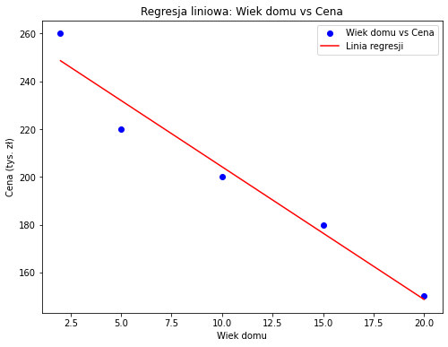
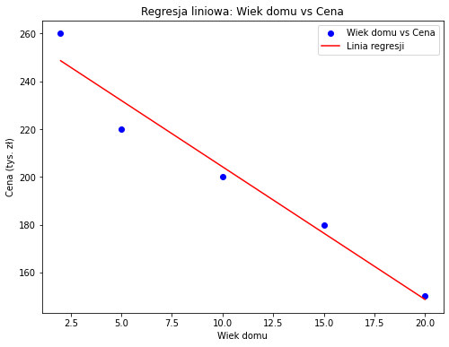

Uczenie Maszynowe - Wykład 2#
Krótkie przypomnienie z poprzedniego wykładu#
Celem sztucznej inteligencji jest stworzenie bytu, który rozumuje jak człowiek.
Choć w wielu zadaniach te algorytmy już przewyższają ludzkie zdolności, mają one trudności z uogólnianiem zadań, gdyż są szkolone do wykonywania tylko jednej, specyficznej rzeczy. Jednak stajemy się coraz lepsi w ich rozwijaniu. Definicja uczenia maszynowego
Uczenie maszynowe to model uczący się na podstawie doświadczenia E, aby wykonać zadanie T, oceniając swoją wydajność za pomocą miary P.
Proces rozwoju modelu#
Cały proces tworzenia rozwiązań opartych na uczeniu maszynowym jest złożony i obejmuje wiele kroków.

Typy algorytmów ML#

Uczenie nadzorowane#
Definicja: Uczenie się na podstawie danych oznaczonych, gdzie są dostarczone pary wejście-wyjście. Cel: Przewidywanie wartości wyjściowych dla nowych danych. Rodzaje:
Regresja: Przewidywanie ciągłych wyników.
Przykład: Przewidywanie cen domów.
Klasyfikacja: Przewidywanie wyników kategorycznych.
Przykład: Wykrywanie spamu w e-mailach.
Uczenie nienadzorowane#
Definicja: Uczenie się z danych nieoznaczonych, znajdowanie wzorców lub struktury w danych. Cel: Grupowanie punktów danych, redukcja wymiarów danych lub odkrywanie powiązań. Rodzaje:
Klasteryzacja: Grupowanie podobnych punktów danych.
Przykład: Segmentacja klientów.
Asocjacja: Znajdowanie reguł opisujących duże części danych.
Przykład: Analiza koszyka zakupowego.
Redukcja wymiarów: Ograniczenie liczby zmiennych opisujących dane do minimum.
Przykład: Wybór zmiennych najważniejszych do przewidywania, kto kupi określone produkty w sklepie.
Wprowadzenie do regresji liniowej#
Czym jest regresja liniowa?#
Regresja liniowa to metoda statystyczna służąca do modelowania zależności między jedną zmienną zależną (y) a jedną lub większą liczbą zmiennych niezależnych (x). Celem jest przewidywanie wartości zmiennej zależnej na podstawie wartości zmiennych niezależnych.
Przykłady zastosowań:#
Przewidywanie cen domów: Na podstawie cech takich jak powierzchnia, liczba pokoi, lokalizacja.
Analiza popytu: Prognozowanie sprzedaży w oparciu o trendy rynkowe.
Badania naukowe: Analiza zależności między różnymi zmiennymi w badaniach eksperymentalnych.
Cel regresji liniowej:#
Regresja liniowa pozwala na:
Modelowanie zależności między zmiennymi,
Przewidywanie wartości zmiennej zależnej,
Określanie, w jakim stopniu zmienne niezależne wpływają na wynik.
Teoretyczne podstawy regresji liniowej#
Równanie prostej regresji:#
Regresja liniowa opisuje relację między zmienną zależną (y) a zmienną niezależną (x) za pomocą równania:
Gdzie:
y – zmienna zależna (wartość, którą chcemy przewidzieć),
x – zmienna niezależna (cecha),
β₀ – wyraz wolny (przecięcie z osią y),
β₁ – współczynnik nachylenia (opisuje zmianę wartości y przy zmianie x).
Parametry modelu:#
β₀ (intercept): wartość y, gdy x = 0.
β₁ (nachylenie): określa, o ile zmieni się y przy jednostkowej zmianie x.
Założenia regresji liniowej:#
Liniowość – relacja między zmienną zależną a niezależnymi musi być liniowa.
Niezależność – obserwacje muszą być niezależne od siebie.
Homoskedastyczność – wariancja reszt powinna być stała dla wszystkich wartości x.
Brak wielokolinearności – brak silnej zależności między zmiennymi niezależnymi (dotyczy regresji wielokrotnej).
import numpy as np
import pandas as pd
import matplotlib.pyplot as plt
import seaborn as sns
from sklearn.linear_model import LinearRegression
# Zbiór danych spełniający założenia regresji liniowej
np.random.seed(0)
x_good = np.random.uniform(1, 10, 100)
y_good = 2.5 * x_good + np.random.normal(0, 2, 100)
# Zbiór danych nie spełniający założeń regresji liniowej (nieliniowość)
x_bad = np.random.uniform(1, 10, 100)
y_bad = 2.5 * x_bad**3 + np.random.normal(4, 22, 100)
# Tworzenie figurek
fig, axs = plt.subplots(1, 2, figsize=(10, 5))
# Dane spełniające założenia regresji liniowej
sns.scatterplot(x=x_good, y=y_good, ax=axs[0])
axs[0].set_title("Dane spełniające założenia regresji liniowej")
# Dane nie spełniające założeń regresji liniowej (nieliniowość)
sns.scatterplot(x=x_bad, y=y_bad, ax=axs[1])
axs[1].set_title("Dane nie spełniające założeń regresji liniowej")
plt.tight_layout()
plt.show()

import numpy as np
import matplotlib.pyplot as plt
from matplotlib.widgets import Slider
# Enable interactive mode
%matplotlib notebook
# Generating data with adjustable homoskedasticity
np.random.seed(0)
x = np.random.uniform(1, 10, 1000)
y_good = 2.5 * x + np.random.normal(0, 2, 1000)
# Function to generate data with different levels of heteroskedasticity
def generate_data(heteroskedasticity_factor):
y_bad = 2.5 * x + np.random.normal(0, heteroskedasticity_factor * x, 1000)
return y_bad
# Create the figure and the line that we will manipulate
fig, ax = plt.subplots(figsize=(8, 6))
plt.subplots_adjust(left=0.1, bottom=0.25)
line, = plt.plot(x, y_good, 'o', label='Good data (Homoskedasticity)')
plt.title("Homoskedastyczność")
# Add a slider for adjusting the heteroskedasticity
ax_hetero = plt.axes([0.1, 0.1, 0.8, 0.03], facecolor='lightgoldenrodyellow')
hetero_slider = Slider(ax_hetero, 'Heteroskedastyczność', 0.1, 1.0, valinit=1.0)
# Update function for the slider
def update(val):
line.set_ydata(generate_data(hetero_slider.val))
fig.canvas.draw_idle()
# Call the update function when the slider value changes
hetero_slider.on_changed(update)
# Display the plot
plt.legend()
plt.xlabel("x")
plt.ylabel("y")
plt.show()
No artists with labels found to put in legend. Note that artists whose label start with an underscore are ignored when legend() is called with no argument.
Równanie prostej regresji:#
Regresja liniowa opisuje relację między zmienną zależną (y) a zmienną niezależną (x) za pomocą równania:
Gdzie:
y – zmienna zależna (wartość, którą chcemy przewidzieć),
x – zmienna niezależna (cecha),
β₀ – wyraz wolny (przecięcie z osią y),
β₁ – współczynnik nachylenia (opisuje zmianę wartości y przy zmianie x).
import numpy as np
import matplotlib.pyplot as plt
from matplotlib.widgets import Slider
from sklearn.linear_model import LinearRegression
# Enable interactive mode
%matplotlib notebook
# Generating initial data
np.random.seed(0)
x_full = np.random.uniform(1, 10, 100)
y_full = 2.5 * x_full + np.random.normal(0, 2, 100)
# Linear regression model
def fit_regression(x, y):
model = LinearRegression()
x_reshaped = x.reshape(-1, 1) # Reshaping for sklearn
model.fit(x_reshaped, y)
y_pred = model.predict(x_reshaped)
return y_pred, model.coef_[0], model.intercept_
# Create the figure and axes for the plot
fig, ax = plt.subplots(figsize=(8, 6))
plt.subplots_adjust(left=0.1, bottom=0.25)
# Plot the initial subset of points and regression line
line_data, = plt.plot(x_full, y_full, 'o', label='Data points')
y_pred, slope, intercept = fit_regression(x_full, y_full)
line_regression, = plt.plot(x_full, y_pred, label='Regression Line')
# Display the regression equation
text_eq = ax.text(0.05, 0.95, f'y = {slope:.2f}x + {intercept:.2f}',
transform=ax.transAxes, fontsize=12, verticalalignment='top')
plt.title("Interactive Linear Regression")
plt.xlabel("x")
plt.ylabel("y")
# Add a slider for adjusting the number of data points
ax_slider = plt.axes([0.1, 0.1, 0.8, 0.03], facecolor='lightgoldenrodyellow')
points_slider = Slider(ax_slider, 'Number of Points', 2, 100, valinit=2, valstep=1)
# Update function for the slider
def update(val):
num_points = int(points_slider.val)
x_subset = x_full[:num_points]
y_subset = y_full[:num_points]
# Update data points and regression line
line_data.set_data(x_subset, y_subset)
y_pred, slope, intercept = fit_regression(x_subset, y_subset)
line_regression.set_data(x_subset, y_pred)
# Update the displayed regression equation
text_eq.set_text(f'y = {slope:.2f}x + {intercept:.2f}')
ax.relim()
# ax.autoscale_view()
fig.canvas.draw_idle()
# Call the update function when the slider value changes
points_slider.on_changed(update)
# Display the plot
plt.legend()
plt.show()
No artists with labels found to put in legend. Note that artists whose label start with an underscore are ignored when legend() is called with no argument.
Algorytm regresji liniowej#
Metoda najmniejszych kwadratów:#
Regresja liniowa używa metody najmniejszych kwadratów do optymalizacji prostej regresji. Celem jest zminimalizowanie sumy kwadratów różnic między rzeczywistymi a przewidywanymi wartościami.
Kroki algorytmu:#
Obliczenie błędu: Różnica między rzeczywistą wartością y a przewidywaną wartością y_hat.
\[ \text{błąd} = y - \hat{y} \]Kwadrat błędu: Błąd podniesiony do kwadratu:
\[ \text{kwadrat błędu} = (y - \hat{y})^2 \]Zminimalizowanie sumy kwadratów błędów: Algorytm szuka współczynników regresji \(\beta_0\), \(\beta_1\)) minimalizujących sumę kwadratów błędów.
\[ \text{SSE} = \sum (y - \hat{y})^2 \]
Interpretacja współczynników:#
\(\beta_1\): Określa zmianę wartości y przy jednostkowej zmianie x.
\(\beta_0\): Wartość y, gdy x = 0.
import numpy as np
import matplotlib.pyplot as plt
from matplotlib.widgets import Slider
# Enable interactive mode
%matplotlib notebook
# Generate synthetic data for linear regression
np.random.seed(0)
x = np.random.uniform(1, 10, 100)
y = 2.5 * x + np.random.normal(0, 2, 100)
# Initialize parameters
alpha = 0.01 # Learning rate
iterations = 100
m, b = 0, 0 # Initial slope and intercept
# Linear regression function for predicting y
def predict(x, m, b):
return m * x + b
# Gradient descent to optimize m and b
def gradient_descent(x, y, m, b, learning_rate, num_iterations):
N = len(y)
for i in range(num_iterations):
y_pred = predict(x, m, b)
m_gradient = -(2/N) * np.sum(x * (y - y_pred))
b_gradient = -(2/N) * np.sum(y - y_pred)
m -= learning_rate * m_gradient
b -= learning_rate * b_gradient
sse = np.sum((y - y_pred) ** 2) # Calculate SSE (sum of squared errors)
if i % 1 == 0: # Plot every 50 iterations for smoother animation
yield m, b, sse
# Create the figure and the line that we will manipulate
fig, ax = plt.subplots(figsize=(8, 6))
plt.subplots_adjust(left=0.1, bottom=0.25)
scat = plt.scatter(x, y, label='Data points')
line, = plt.plot(x, predict(x, m, b), label='Regression Line', color='red')
plt.title("Interactive Linear Regression with Gradient Descent")
plt.xlabel("x")
plt.ylabel("y")
# Display the sum of squared errors (SSE) in the plot
text_sse = ax.text(0.05, 0.95, f'SSE: {np.sum((y - predict(x, m, b)) ** 2):.2f}',
transform=ax.transAxes, fontsize=12, verticalalignment='top')
# Add a slider for adjusting the number of iterations
ax_slider = plt.axes([0.1, 0.1, 0.8, 0.03], facecolor='lightgoldenrodyellow')
iter_slider = Slider(ax_slider, 'Iterations', 1, 100, valinit=1, valstep=1)
# Update function to show regression optimization and update SSE
def update(val):
num_iterations = int(iter_slider.val)
for m_opt, b_opt, sse_opt in gradient_descent(x, y, m, b, alpha, num_iterations):
line.set_ydata(predict(x, m_opt, b_opt))
text_sse.set_text(f'SSE: {sse_opt:.2f}')
# ax.relim()
# ax.autoscale_view()
fig.canvas.draw_idle()
# Call the update function when the slider value changes
iter_slider.on_changed(update)
# Display the plot
plt.legend()
plt.show()
No artists with labels found to put in legend. Note that artists whose label start with an underscore are ignored when legend() is called with no argument.
Przykład liczbowy regresji liniowej: Predykcja cen domów#
Dane:#
Rozważmy prosty przykład, gdzie chcemy przewidzieć ceny domów na podstawie ich powierzchni. Mamy następujące dane:
Powierzchnia (m²) |
Cena (tys. zł) |
|---|---|
50 |
150 |
60 |
180 |
80 |
200 |
100 |
220 |
120 |
260 |
# Importowanie potrzebnych bibliotek
import numpy as np
from sklearn.linear_model import LinearRegression
# Dane (powierzchnia w metrach kwadratowych oraz ceny domów w tysiącach zł)
x = np.array([50, 60, 80, 100, 120, 140]).reshape(-1, 1) # Składanie danych x w kolumnę
y = np.array([150, 180, 200, 220, 260, 300])
%matplotlib inline
plt.scatter(x,y)
<matplotlib.collections.PathCollection at 0x178715e6550>
# Tworzenie modelu regresji liniowej
model = LinearRegression()
# Dopasowanie modelu do danych
model.fit(x, y)
LinearRegression()In a Jupyter environment, please rerun this cell to show the HTML representation or trust the notebook.
On GitHub, the HTML representation is unable to render, please try loading this page with nbviewer.org.
LinearRegression()
# Współczynnik nachylenia (beta_1) i wyraz wolny (beta_0)
beta_1 = model.coef_[0]
beta_0 = model.intercept_
# Funkcja do przewidywania cen dla nowych wartości powierzchni
def predict(x_val):
return model.predict(np.array(x_val).reshape(-1, 1))
# Przewidywanie cen dla podanych wartości x
y_pred = predict(x)
plt.scatter(x,y)
plt.plot(np.arange(0,150),[beta_1*z + beta_0 for z in np.arange(0,150)],
c='k',ls='--')
[<matplotlib.lines.Line2D at 0x17871750d00>]
Ocena jakości modelu regresji#
Współczynnik determinacji (R²)#
R² mierzy, jaka część wariancji zmiennej zależnej jest wyjaśniona przez model.
Zakres wartości: od 0 do 1.
Wzór: $\( R^2 = 1 - \frac{\sum (y_i - \hat{y}_i)^2}{\sum (y_i - \bar{y})^2} \)\( gdzie \)y_i\( to rzeczywista wartość, \)\hat{y}_i\( to przewidywana wartość, a \) \bar{y} $ to średnia wartość rzeczywistych danych.
Interpretacja:
R² = 1: Model idealnie dopasowany.
R² = 0: Model nie wyjaśnia żadnej zmienności danych.
Średni błąd bezwzględny (MAE)#
MAE mierzy średnią różnicę między przewidywanymi a rzeczywistymi wartościami.
Wzór: $\( MAE = \frac{1}{n} \sum_{i=1}^{n} |y_i - \hat{y}_i| \)$
Interpretacja:
Im mniejsza wartość MAE, tym lepsza jakość modelu. MAE mówi o przeciętnym błędzie modelu w jednostkach danych.
Średni błąd kwadratowy (MSE)#
MSE mierzy średnią kwadratową różnicę między rzeczywistymi a przewidywanymi wartościami.
Wzór: $\( MSE = \frac{1}{n} \sum_{i=1}^{n} (y_i - \hat{y}_i)^2 \)$
Interpretacja:
MSE jest wrażliwe na duże błędy, ponieważ podnosi błędy do kwadratu, co wzmacnia ich wagę.
Pierwiastek ze średniego błędu kwadratowego (RMSE)#
RMSE to pierwiastek kwadratowy z MSE. Jest bardziej interpretowalny, ponieważ przywraca jednostki danych.
Wzór: $\( RMSE = \sqrt{MSE} \)$
Interpretacja:
Im niższe RMSE, tym lepiej model przewiduje rzeczywiste dane.
Optymalizacja regresji za pomocą gradientu stochastycznego#
Czym jest gradient stochastyczny?#
Gradient stochastyczny to metoda optymalizacji używana w uczeniu maszynowym do minimalizacji funkcji kosztu. W przypadku regresji liniowej celem jest minimalizacja błędu predykcji, czyli różnicy między przewidywaną a rzeczywistą wartością.
Funkcja kosztu#
Dla regresji liniowej używamy funkcji kosztu zwanej średnim błędem kwadratowym (MSE): $\( J(\theta) = \frac{1}{n} \sum_{i=1}^{n} (y_i - \hat{y}_i)^2 \)\( Gdzie \)y_i\( to rzeczywista wartość, a \)\hat{y}_i$ to przewidywana wartość.
Aktualizacja parametrów#
Gradient stochastyczny optymalizuje model, aktualizując parametry regresji (współczynniki) w każdym kroku: $\( \theta_j := \theta_j - \alpha \frac{\partial}{\partial \theta_j} J(\theta) \)$ Gdzie:
\(theta_j\) to współczynniki modelu (nachylenie i wyraz wolny),
\(\alpha\) to współczynnik uczenia (learning rate),
\(\frac{\partial}{\partial \theta_j} J(\theta)\) to pochodna funkcji kosztu (gradient).
Stochastic Gradient Descent (SGD)#
W klasycznym Gradient Descent używamy całego zbioru danych, aby obliczyć gradient. W Stochastic Gradient Descent (SGD), obliczamy gradient dla jednej losowej próbki na raz, co sprawia, że optymalizacja jest szybsza i bardziej efektywna w przypadku dużych zbiorów danych.
Kroki algorytmu SGD:#
Inicjalizacja parametrów \(\theta_0\) i \(\theta_1\) (np. losowe wartości).
Iteracyjnie aktualizujemy parametry dla każdej próbki (i):
Obliczamy gradient dla próbki: $\( \nabla_{\theta_j} J(\theta) = -2x_i(y_i - \hat{y}_i) \)$
Aktualizujemy parametry modelu: $\( \theta_j := \theta_j - \alpha \nabla_{\theta_j} J(\theta) \)$
Powtarzamy aż parametry osiągną optymalne wartości.
Zalety Gradientu Stochastycznego:#
Szybka optymalizacja: Przetwarza próbki na bieżąco, co pozwala szybciej dotrzeć do dobrego rozwiązania.
Efektywność przy dużych zbiorach danych: Lepiej sprawdza się w sytuacjach, gdzie zbiór danych jest duży i nie można przeprowadzać pełnych aktualizacji dla całego zbioru.
Wizualizacja optymalizacji#
Gradient stochastyczny porusza się po przestrzeni parametrów, dążąc do minimalizacji funkcji kosztu. Parametry regresji są stopniowo dostosowywane, aż funkcja kosztu osiągnie minimum.
import numpy as np
import matplotlib.pyplot as plt
from matplotlib import animation
# Define the function (a simple quadratic bowl for this example)
def f(x, y):
return 2*x**2 + y**2
# Gradient of the function
def grad_f(x, y):
return np.array([4*x, 2*y])
# Stochastic Gradient Descent (SGD) with adjustable learning rate and iterations
def sgd(starting_point, learning_rate, iterations):
x_values = [starting_point[0]]
y_values = [starting_point[1]]
current_point = np.array(starting_point)
for i in range(iterations):
gradient = grad_f(current_point[0], current_point[1])
current_point = current_point - learning_rate * gradient
x_values.append(current_point[0])
y_values.append(current_point[1])
return x_values, y_values
# Create a grid for the contour plot
x = np.linspace(-5, 5, 100)
y = np.linspace(-5, 5, 100)
X, Y = np.meshgrid(x, y)
Z = f(X, Y)
# Set up the figure and axis
fig, ax = plt.subplots()
ax.contour(X, Y, Z, levels=np.logspace(-1, 3, 20), cmap='viridis')
# Starting point and parameters for SGD
start_point = np.array([4, 4])
learning_rate = 0.1
# This function will update the plot for the animation
def update(iteration):
ax.clear()
ax.contour(X, Y, Z, levels=np.logspace(-1, 3, 20), cmap='viridis')
iterations = iteration + 1
x_vals, y_vals = sgd(start_point, learning_rate, iterations)
ax.plot(x_vals, y_vals, marker='o', color='red')
ax.set_title(f"SGD Iteration: {iterations}")
# Create the animation
ani = animation.FuncAnimation(fig, update, frames=50, interval=200)
# Show the plot
plt.show()
# Define a more complex cost function (Rosenbrock function)
def f_complex(x, y):
return (1 - x)**2 + 100 * (y - x**2)**2
# Gradient of the more complex cost function
def grad_f_complex(x, y):
grad_x = -2 * (1 - x) - 400 * x * (y - x**2)
grad_y = 200 * (y - x**2)
return np.array([grad_x, grad_y])
# Stochastic Gradient Descent (SGD) with the more complex cost function
def sgd_complex(starting_point, learning_rate, iterations):
x_values = [starting_point[0]]
y_values = [starting_point[1]]
current_point = np.array(starting_point)
for i in range(iterations):
gradient = grad_f_complex(current_point[0], current_point[1])
current_point = current_point - learning_rate * gradient
x_values.append(current_point[0])
y_values.append(current_point[1])
return x_values, y_values
# Create a grid for the contour plot of the more complex function
x = np.linspace(-2, 4, 400)
y = np.linspace(-1, 5, 400)
X, Y = np.meshgrid(x, y)
Z = f_complex(X, Y)
# Set up the figure and axis for the more complex cost function
fig, ax = plt.subplots()
ax.contour(X, Y, Z, levels=np.logspace(-1, 5, 10), cmap='viridis')
# This function will update the plot for the more complex function animation
def update_complex(iteration):
ax.clear()
ax.contour(X, Y, Z, levels=np.logspace(-1, 3, 20), cmap='viridis')
iterations = iteration + 1
x_vals, y_vals = sgd_complex(start_point, learning_rate, iterations)
ax.plot(x_vals, y_vals, marker='o', color='red')
ax.set_title(f"SGD Iteration: {iterations} (Complex Function)")
# Create the animation for the more complex function
ani_complex = animation.FuncAnimation(fig, update_complex, frames=20, interval=200)
# Show the plot
plt.show()
Porównanie Gradientu Stochastycznego z Równaniem Normalnym#
Gradient Stochastyczny (SGD)#
Gradient Stochastyczny to algorytm optymalizacyjny, który iteracyjnie aktualizuje parametry modelu, minimalizując funkcję kosztu. Jest to metoda numeryczna stosowana do regresji liniowej, szczególnie przy dużych zbiorach danych.
Kroki działania:#
Inicjalizacja parametrów (np. losowe wartości dla nachylenia \( m \) i wyrazu wolnego \( b \)).
Obliczanie gradientów dla każdej próbki:
Gradient funkcji kosztu: $\( \nabla_{\theta_j} J(\theta) = -2x_i(y_i - \hat{y}_i) \)$
Aktualizacja parametrów przy każdym kroku: $\( \theta_j := \theta_j - \alpha \nabla_{\theta_j} J(\theta) \)$ Gdzie:
\( \theta_j \) to współczynniki regresji,
\( \alpha \) to współczynnik uczenia (learning rate).
Zalety Gradientu Stochastycznego:#
Szybkość dla dużych zbiorów danych: Aktualizuje parametry na podstawie pojedynczych próbek, co pozwala na szybsze przetwarzanie dużych zbiorów.
Dobrze sprawdza się przy danych online: Może działać na bieżąco, aktualizując parametry po każdej nowej próbce danych.
Wady Gradientu Stochastycznego:#
Zmienność: Może nie znaleźć globalnego minimum funkcji kosztu, szczególnie gdy współczynnik uczenia jest nieodpowiednio dobrany.
Wymaga wielu iteracji: Działa iteracyjnie, co może być czasochłonne w małych zbiorach danych.
Równanie Normalne (Normal Equation)#
Równanie Normalne to analityczne rozwiązanie regresji liniowej, które znajduje optymalne współczynniki bez potrzeby iteracji. Oparte jest na algebrze liniowej, a rozwiązanie wyznaczane jest bezpośrednio.
Równanie Normalne:#
Gdzie:
\( X \) to macierz cech (z \( x \)-ami),
\( y \) to wektor wartości zależnych,
\( \theta \) to wektor współczynników regresji.
Zalety Równania Normalnego:#
Dokładność: Rozwiązanie analityczne daje dokładne wartości współczynników bez potrzeby iteracyjnego dostosowywania.
Nie wymaga iteracji: Równanie Normalne oblicza wynik bez konieczności wielu kroków optymalizacji.
Wady Równania Normalnego:#
Koszt obliczeniowy: Operacja odwrotności macierzy \( X^TX \) jest kosztowna obliczeniowo, szczególnie przy dużych zbiorach danych (złożoność \( O(n^3) \)).
Nieskuteczność dla dużych danych: Nie sprawdza się przy bardzo dużych zbiorach danych ze względu na wymagania pamięciowe i czasowe.
Podsumowanie#
Gradient Stochastyczny:
Zalety: Szybki dla dużych zbiorów, dobrze działa z danymi online.
Wady: Może wymagać wielu iteracji i być wrażliwy na wybór współczynnika uczenia.
Równanie Normalne:
Zalety: Dokładne rozwiązanie bez iteracji.
Wady: Wysoki koszt obliczeniowy, szczególnie dla dużych zbiorów danych.
Wyprowadzenie Równania Normalnego z Gradientu Stochastycznego#
Cel:#
Chcemy znaleźć optymalne współczynniki regresji liniowej, minimalizując funkcję kosztu. W tym celu możemy wykorzystać Gradient Stochastyczny, ale istnieje także rozwiązanie analityczne znane jako Równanie Normalne.
Funkcja kosztu dla regresji liniowej#
W regresji liniowej dążymy do minimalizacji funkcji kosztu, która jest zdefiniowana jako średni błąd kwadratowy (MSE):
Gdzie:
\( h_\theta(x) \) to przewidywana wartość: \( h_\theta(x) = \theta^T x \)
\( \theta \) to wektor współczynników regresji,
\( x^{(i)} \) to i-ta próbka danych wejściowych,
\( y^{(i)} \) to rzeczywista wartość zależna dla i-tej próbki,
\( m \) to liczba próbek w zbiorze danych.
Gradient funkcji kosztu#
Gradient funkcji kosztu względem parametrów \( \theta \) (współczynników regresji) to:
Gdzie:
\( X \) to macierz danych wejściowych (macierz cech),
\( y \) to wektor wartości zależnych,
\( \theta \) to wektor współczynników regresji.
Aktualizacja parametrów w Gradientzie Stochastycznym#
Gradient Stochastyczny (SGD) aktualizuje parametry \( \theta \) iteracyjnie w kierunku przeciwnym do gradientu funkcji kosztu:
Gdzie:
\( \alpha \) to współczynnik uczenia (learning rate),
\( \frac{\partial}{\partial \theta} J(\theta) \) to gradient funkcji kosztu względem \( \theta \).
Wyprowadzenie Równania Normalnego#
Zamiast używać iteracyjnej metody gradientowej, możemy znaleźć analityczne rozwiązanie, które minimalizuje funkcję kosztu. Rozwiązanie to otrzymamy, ustawiając gradient funkcji kosztu równy zero i rozwiązując dla \( \theta \).
Gradient funkcji kosztu wynosi:
Aby znaleźć minimum funkcji kosztu, ustawiamy gradient równy zero:
Rozwijamy powyższe równanie:
Rozwiązujemy równanie względem \( \theta \):
Równanie Normalne#
Ostatecznie, otrzymujemy wzór znany jako Równanie Normalne:
Podsumowanie#
Gradient Stochastyczny iteracyjnie aktualizuje parametry, ale równanie normalne daje bezpośrednie rozwiązanie analityczne.
Równanie Normalne znajduje optymalne współczynniki regresji, minimalizując funkcję kosztu w jednym kroku, bez potrzeby iteracji.
Regresja wielokrotna (Multiple Linear Regression)#
Czym jest regresja wielokrotna?#
Regresja wielokrotna to rozszerzenie regresji liniowej, które pozwala na modelowanie zależności między zmienną zależną (wynik) a wieloma zmiennymi niezależnymi (cechy). Zamiast przewidywać wynik na podstawie jednej cechy, używamy kilku cech, aby stworzyć bardziej dokładny model.
Równanie regresji wielokrotnej#
Równanie regresji wielokrotnej ma postać:
Gdzie:
\( \hat{y} \) to przewidywana wartość,
\( \beta_0 \) to wyraz wolny (intercept),
\( \beta_1, \beta_2, ..., \beta_n \) to współczynniki regresji odpowiadające poszczególnym cechom \( x_1, x_2, ..., x_n \),
\( x_1, x_2, ..., x_n \) to wartości cech (zmiennych niezależnych).
Przykład:#
Załóżmy, że chcemy przewidzieć cenę domu na podstawie kilku cech: powierzchni (m²), liczby pokoi i wieku domu (w latach). Równanie regresji wielokrotnej może wyglądać następująco:
Cele regresji wielokrotnej#
Regresja wielokrotna pozwala:
Modelować zależność między zmienną zależną a wieloma zmiennymi niezależnymi.
Lepsze przewidywanie wartości wynikowej poprzez uwzględnienie wielu czynników.
Określać, które zmienne mają największy wpływ na zmienną zależną.
Założenia regresji wielokrotnej#
Liniowość – Zakładamy, że istnieje liniowa relacja między zmienną zależną a zmiennymi niezależnymi.
Brak wielokolinearności – Zmienne niezależne nie powinny być silnie ze sobą skorelowane.
Homoskedastyczność – Wariancja reszt powinna być stała dla wszystkich wartości zmiennych niezależnych.
Niezależność reszt – Reszty (błędy) powinny być niezależne od siebie.
Wskaźniki oceny modelu#
Współczynnik determinacji (R²) – Mierzy, jaka część wariancji zmiennej zależnej jest wyjaśniona przez model.
Mean Squared Error (MSE) – Średnia kwadratowa różnica między rzeczywistymi a przewidywanymi wartościami.
Adjusted R² – Uwzględnia liczbę zmiennych w modelu, karząc model za nadmierne dodawanie zmiennych, które nie poprawiają znacząco predykcji.
Zalety regresji wielokrotnej:#
Większa dokładność: Uwzględnienie wielu zmiennych pozwala na bardziej precyzyjne przewidywania.
Ocena wpływu zmiennych: Model pokazuje, które cechy mają największy wpływ na wynik.
Wady regresji wielokrotnej:#
Wielokolinearność: Kiedy zmienne niezależne są silnie skorelowane, może to prowadzić do niestabilności modelu.
Złożoność: W miarę dodawania większej liczby zmiennych, interpretacja wyników staje się trudniejsza.
Regresja wielokrotna jest potężnym narzędziem do modelowania złożonych zależności, ale wymaga ostrożności w doborze zmiennych i sprawdzenia założeń modelu.
# Importowanie potrzebnych bibliotek
import numpy as np
import pandas as pd
from sklearn.linear_model import LinearRegression
from sklearn.metrics import r2_score, mean_squared_error
# Dane przykładowe (powierzchnia w m², liczba pokoi, wiek domu, oraz cena w tys. zł)
data = {
'Powierzchnia': [50, 60, 80, 100, 120],
'Liczba pokoi': [2, 3, 3, 4, 5],
'Wiek domu': [20, 15, 10, 5, 2],
'Cena': [150, 180, 200, 220, 260]
}
# Tworzenie DataFrame
df = pd.DataFrame(data)
# Zmienne niezależne (Powierzchnia, Liczba pokoi, Wiek domu)
X = df[['Powierzchnia', 'Liczba pokoi', 'Wiek domu']]
# Zmienna zależna (Cena)
y = df['Cena']
%matplotlib inline
plt.scatter(X['Powierzchnia'],y)
<matplotlib.collections.PathCollection at 0x17872839130>
%matplotlib inline
plt.scatter(X['Liczba pokoi'],y)
<matplotlib.collections.PathCollection at 0x17872d374c0>

%matplotlib inline
plt.scatter(X['Wiek domu'],y)
<matplotlib.collections.PathCollection at 0x17872db5190>

# Tworzenie modelu regresji liniowej
model = LinearRegression()
# Dopasowanie modelu do danych
model.fit(X, y)
LinearRegression()In a Jupyter environment, please rerun this cell to show the HTML representation or trust the notebook.
On GitHub, the HTML representation is unable to render, please try loading this page with nbviewer.org.
LinearRegression()
# Przewidywanie cen dla danych wejściowych
y_pred = model.predict(X)
# Współczynniki regresji
beta_0 = model.intercept_
beta_1_2_3 = model.coef_
# Obliczenie R² i MSE
r2 = r2_score(y, y_pred)
mse = mean_squared_error(y, y_pred)
# Importowanie potrzebnych bibliotek
import numpy as np
import pandas as pd
import matplotlib.pyplot as plt
from sklearn.linear_model import LinearRegression
# Dane przykładowe (powierzchnia w m², liczba pokoi, wiek domu, oraz cena w tys. zł)
data = {
'Powierzchnia': [50, 60, 80, 100, 120],
'Liczba pokoi': [2, 3, 3, 4, 5],
'Wiek domu': [20, 15, 10, 5, 2],
'Cena': [150, 180, 200, 220, 260]
}
# Tworzenie DataFrame
df = pd.DataFrame(data)
# Zmienna zależna (Cena)
y = df['Cena']
# Tworzenie modelu regresji liniowej
model = LinearRegression()
# Funkcja do tworzenia wykresów
def plot_regression_line(feature, feature_name):
X = df[[feature_name]]
# Dopasowanie modelu do jednej cechy
model.fit(X, y)
y_pred = model.predict(X)
# Tworzenie wykresu
plt.figure(figsize=(8, 6))
plt.scatter(X, y, color='blue', label=f'{feature_name} vs Cena')
plt.plot(X, y_pred, color='red', label='Linia regresji')
plt.xlabel(feature_name)
plt.ylabel('Cena (tys. zł)')
plt.title(f'Regresja liniowa: {feature_name} vs Cena')
plt.legend()
plt.show()
# Wykres dla każdej cechy
plot_regression_line('Powierzchnia', 'Powierzchnia')
plot_regression_line('Liczba pokoi', 'Liczba pokoi')
plot_regression_line('Wiek domu', 'Wiek domu')
 
